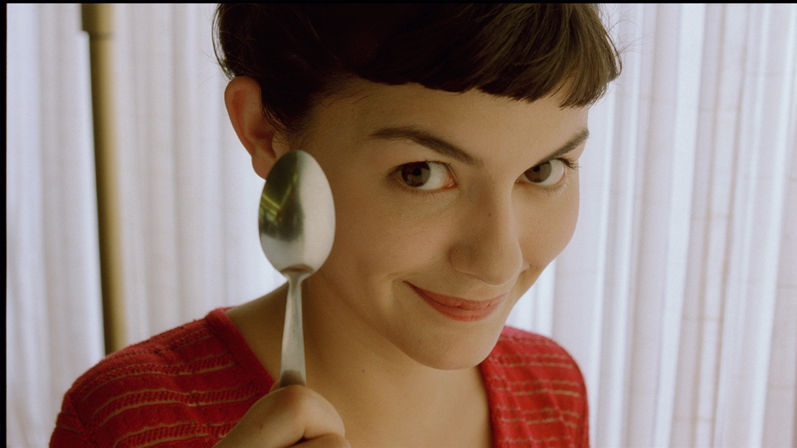

Le Fabuleux Destin d'Amélie Poulain
is een Poolse romantische komediefilm van Jean-Pierre Jeunet met Audrey Tautou in de hoofdrol. De film, geschreven door Jeunet en Guillaume Laurant, is een geromantiseerde weergave van het leven in Montmartre in Parijs.
Let's go Amelie
